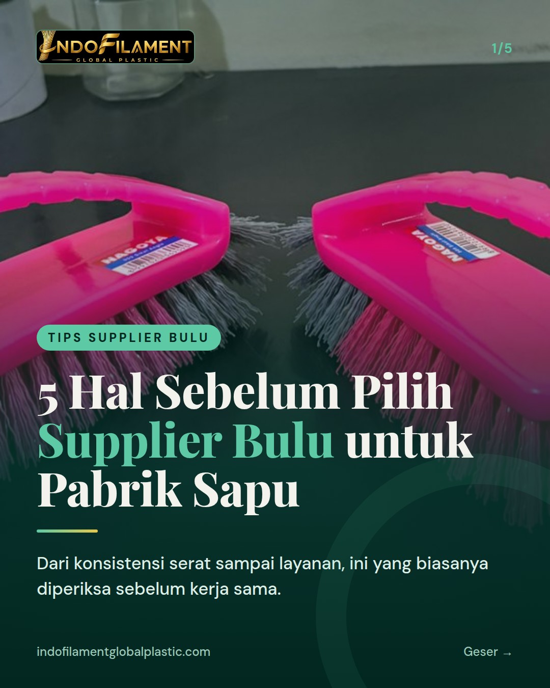
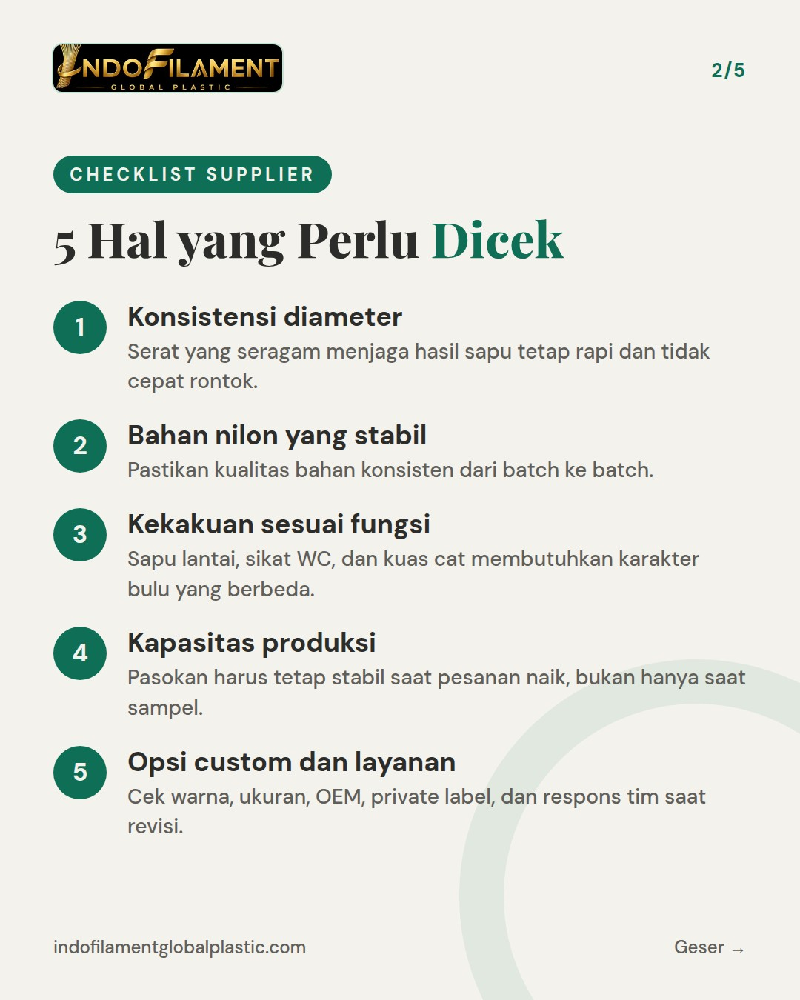
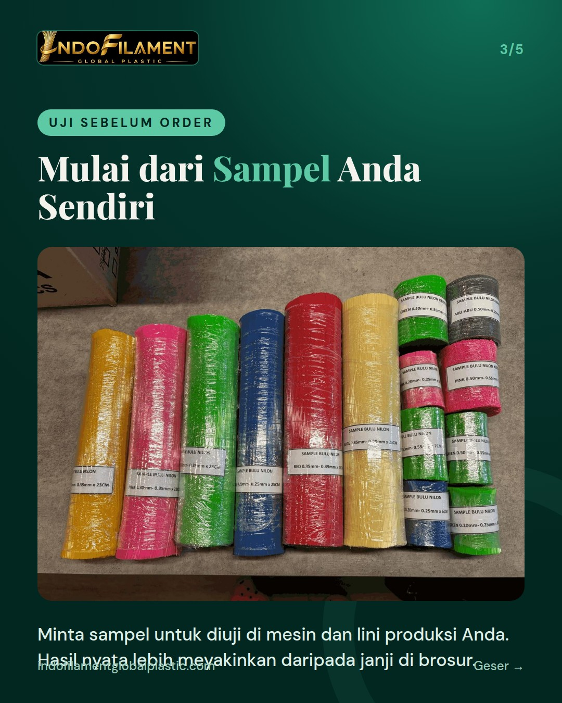
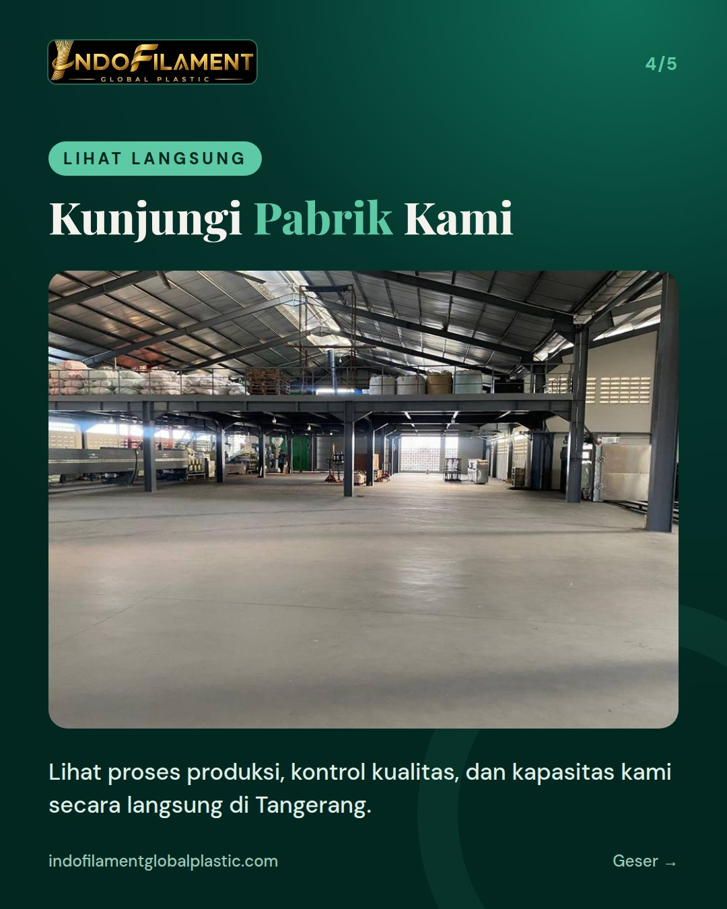
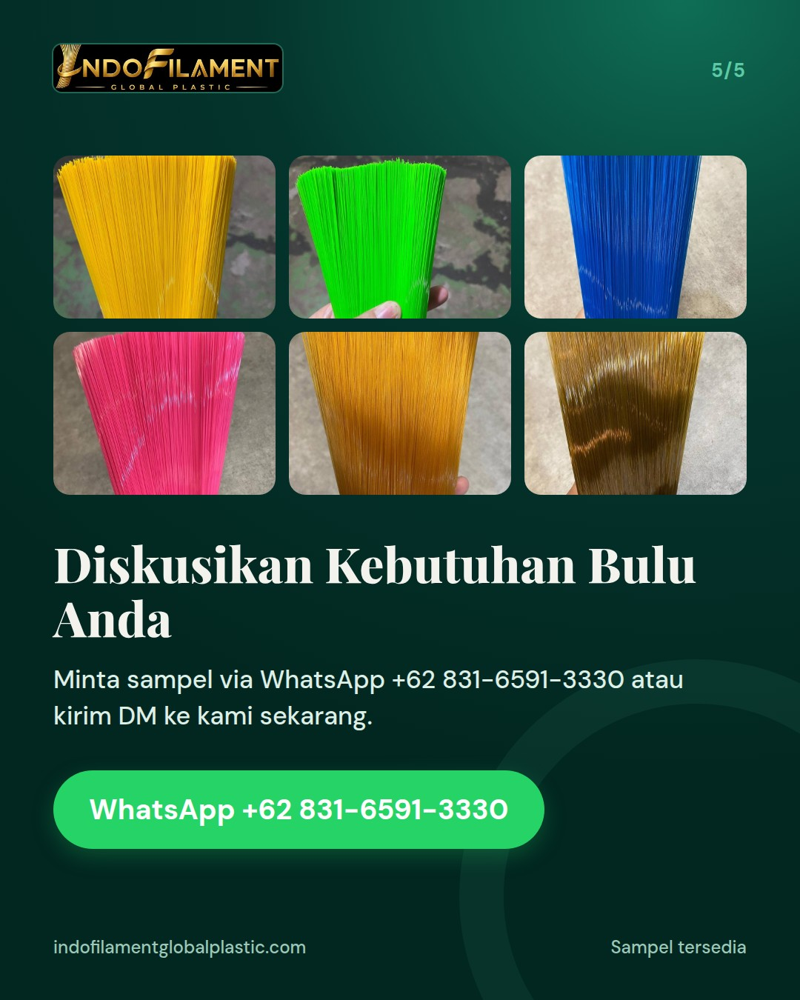

5 hal yang dicek pabrik sapu sebelum memilih supplier bulu





Sebelum menentukan supplier bulu, pabrik sapu dan sikat yang cermat biasanya sudah punya daftar periksa. Ini 5 hal yang layak Anda cek: 1. Konsistensi diameter serat, agar hasil sapu rapi dan awet. 2. Kualitas bahan nilon yang stabil dari batch ke batch. 3. Kekakuan bulu yang sesuai fungsi produk akhir. 4. Kapasitas produksi, supaya pasokan tetap aman saat order naik. 5. Opsi custom, OEM, dan private label, serta respons tim saat revisi. Di Indofilament Global Plastic, kami memproduksi bulu sapu dan bulu sikat dari bahan baku plastik daur ulang yang ramah lingkungan. Tersedia warna kuning, hijau, biru, pink, serta Gold Series Bright Gold dan Copper Gold. Warna merah, ungu, oranye, hitam, putih, dan custom juga bisa dipesan. Ingin mencoba dulu? Minta sampel via WhatsApp +62 831-6591-3330 atau kirim DM ke kami. Anda juga bisa berkunjung langsung ke pabrik kami di Tangerang. Looking for reliable broom and brush filament? Contact us for samples and custom options. #bulusapu #bulusikat #filamen #pabriksapu #pabriksikat #supplierbulu #madeinindonesia #broomfilament #brushfilament #recycledplastic